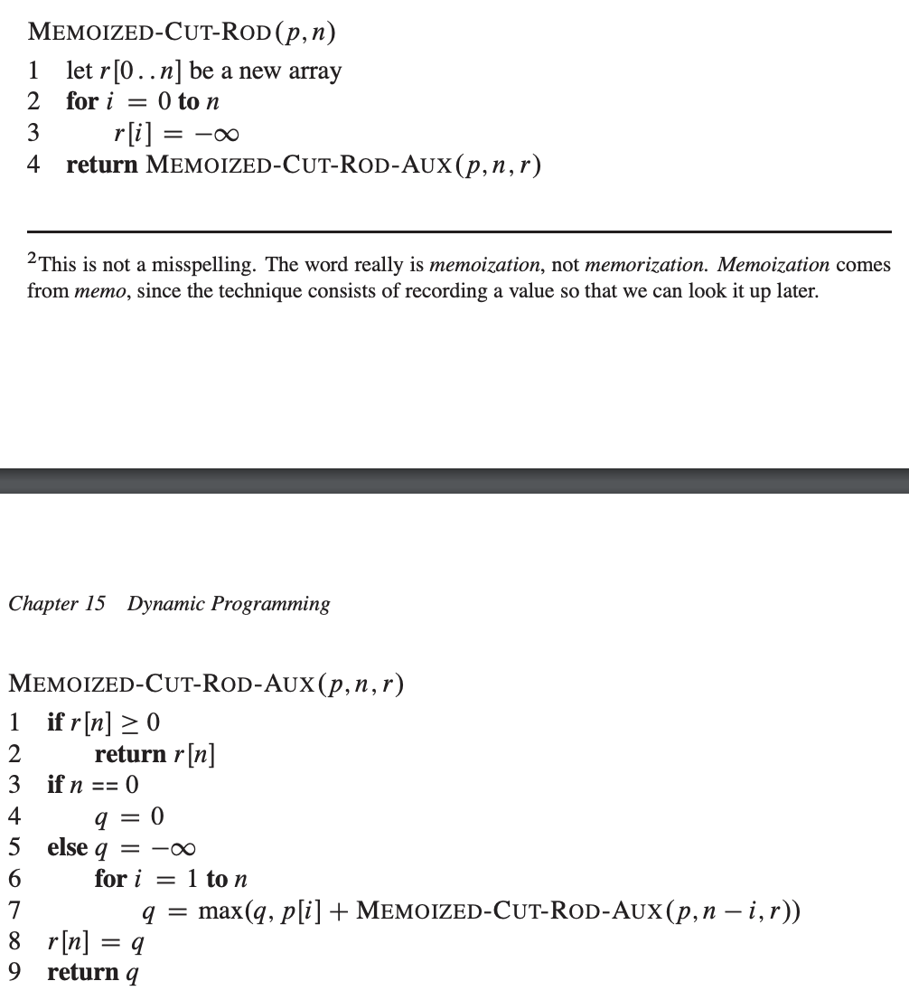

Dynamic Programming
62. Unique Paths (Simple DP)
There is a robot on an m x n grid. The robot is initially located at the top-left corner (i.e., grid[0][0]). The robot tries to move to the bottom-right corner (i.e., grid[m - 1][n - 1]). The robot can only move either down or right at any point in time.
Given the two integers m and n, return the number of possible unique paths that the robot can take to reach the bottom-right corner.
class Solution {
public:
int uniquePaths(int m, int n) {
vector<vector<long long int>> matrix(m, vector<long long int>(n,1));
for(int row=m-2; row>=0; row--) {
for(int col=n-2; col>=0; col--) {
matrix[row][col] = matrix[row][col+1]+matrix[row+1][col];
}
}
return matrix[0][0];
}
};
0-1 Knapsack
Problem Statement:
Given weights and values of n items, put these items in a knapsack of capacity W to get the maximum total value in the knapsack. In other words, given two integer arrays val[0..n-1] and wt[0..n-1] which represent values and weights associated with n items respectively.
Also given an integer W which represents knapsack capacity, find out the maximum value subset of val[] such that sum of the weights of this subset is smaller than or equal to W.
You cannot break an item, either pick the complete item or don’t pick it (0-1 property).
Solution:
Optimal Sub-structure: To consider all subsets of items, there can be two cases for every item.
Case 1: The item is included in the optimal subset.
Case 2: The item is not included in the optimal set.
Therefore, the maximum value that can be obtained from ‘n’ items is the max of the following two values.
1. Maximum value obtained by n-1 items and W weight (excluding nth item).
2. Value of nth item plus maximum value obtained by n-1 items and W minus the weight of the nth item (including nth item).
#include <bits/stdc++.h>
using namespace std;
int knapSack(int W, int wt[], int val[], int n)
{
// making and initializing dp array
int dp[W + 1];
memset(dp, 0, sizeof(dp));
for (int i = 1; i < n + 1; i++) {
for (int w = W; w >= 0; w--) {
if (wt[i - 1] <= w)
// finding the maximum value
dp[w] = max(dp[w],
dp[w - wt[i - 1]] + val[i - 1]);
}
}
return dp[W]; // returning the maximum value of knapsack
}
int main()
{
int val[] = { 60, 100, 120 };
int wt[] = { 10, 20, 30 };
int W = 50;
int n = sizeof(val) / sizeof(val[0]);
cout << knapSack(W, wt, val, n);
return 0;
}
Subset Sum Problem
Problem:
Given a set of non-negative integers, and a value sum, determine if there is a subset of the given set with sum equal to given sum.
Solution:
Similar to knapsack. Create a DP array of sum and elements.
Return true if
1. Subset sum is possible without current element
or
2. [Subset sum - current element] is possible with n-1 elements.
DP[ind][sum];
DP[i][j] = DP[i-1][sum]
if( sum-input[i] >= 0 ) DP[i][j] = DP[i][j] || DP[i-1][sum-input[i]]
//Bottom up DP solution
Equal sum partition
Use above subset sum problem and find if there exists any subset with target sum = Total sum / 2
Count of subsets with Sum
In subset sum problem, instead of keeping bool, keep count of subsets with given sum and replace or with +.
Minimum subset sum difference
Min subset sum difference could be 0 i.e. similar to equal sum partition.
In equal sum partition, we were returning true or false from last block i.e. dp[i][j] where i=size of input, j=target sum
Here, we will return maximum sum (i.e. i) for which dp[i][sum] (last column) is true.
Count subsets with given sum difference
Here we need to count subsets with sum = ( Total sum - diff ) / 2 How to come up with above formula? Lets say we partition set with 1 subset sum=X and other subset sum =Y X+Y=TotalSum -> Y = TotalSum-X or X = TotalSum-Y | X-Y | = diff X = diff + Y X = diff + TotalSum - X TotalSum - Y = diff + Y 2 * X = diff + TotalSum TotalSum - diff = 2 * Y X = (diff + TotalSum) / 2 Y = ( TotalSum - diff) / 2
You can use any of the formula.
Target Sum Problem
You are given an array of positive integers. You need to find number of ways by which you can make total sum of that array as given number. You are allowed to assign + or - sign to each element.
This is same as Count subsets with given sum difference. But it is difficult to identify.
Unbounded Knapsack
Same item can be taken multiple times.
DP [ i ] [ j ] = max ( DP[ i-1 ] [ j ] , DP [ i ] [ j - weight [ i ] ] );
Rod Cutting Problem
There are 2^length-1 options to cut rod.
We can either cut or not cut between i , i + 1 for i=1,7 in following case. So 2^7 options.
There is an optimal substructure property. If we know answer for length smaller than n then we can use that value in calculation for length n.
1 2 3 4 5 6 7 8
cutRod(n) = max(price[i] + cutRod(n-i-1)) for all i in {0, 1 .. n-1}


Coin Change (Combination Sum)
Given the target value N and array of allowed numbers, count number of way to write N as sum of those numbers.
Here only sum matters. How we are using those coins does not matter. 1+1+2 here we have already used 1s and then used 2 2+1+1 here we have used 2 first and then used 1 which is also allowed.
E.g. nums = [1,2,3] N=4 1+1+1+1, 1+1+2, 1+2+1, 1+3, 2+1+1, 2+2, 3+1 -> total 7 Note that 1+1+2 and 1+2+1 are counted as different way.
//top down
dp[0] = 1;
for i in 1..N:
for x in nums:
dp[i] += dp[i-x]
//bottom up
dp[0] = 1;
for i in 1..N:
for x in nums:
dp[i+x] += dp[i]
Coin Change (min)
You are given denominations of coins and the target amount N. What is the minimum possible number of coins used.
E.g.1: nums=[1,2,5] N=11 5+5+1 -> 3 coins E.g.2: nums=[1,3,4] N=6 3+3 -> 2 coins
dp[0] = 0;
dp[1..N] = INF
for i in 1..N:
for x in nums:
dp[i] = min(dp[i],dp[i-x]+1)
Coin change (ways)
You are given denomination of coins and the target amount N. What is the number of ways to make up amount N ?
E.g. nums=[1,2,5] N=5 5, 1+2+2, 1+1+1+2, 1+1+1+1+1 -> 4 Ways Note that order does not matter here.
Here not only sum matters, here sum,coins used till now both matters. This is unbounded knapsack. Here last used coin matters.
Since you want to avoid counting 1+2+2 and 2+1+2 differently. You can consider only ascending order ways. Think of it this way: Currently we have 1,2,5 coins. Let's first find no of ways using only 1, then find no of ways using 1,2, etc. dp[amount][coin_i] = dp[ amount-value[coin_i] ][coin_i] + dp[amount][coin_i-1] include coin_i don't include coin_i, so same amount using coin_i-1 coins
Form a 2d dp table.
Longest Common Subsequence
C(i,j) = LCS[ text1(1..i), text2(1..j) ] LCS(text1,text2) = C(m,n) m=length of text1, n=length of text2
C(i,j) = if text1[i] == text2[j] -> C(i-1,j-1) = else max( C(i-1,j), C(i,j-1) )
int longestCommonSubsequence(string text1, string text2) {
short dp[1001][1001];
for(int i=0; i<= text1.size(); i++) {
dp[i][0] = 0;
}
for(int j=0; j<= text1.size(); j++) {
dp[0][j] = 0;
}
for(int i=1; i<=text1.size(); i++) {
for(int j=1; j<=text2.size(); j++) {
//LCS[x,y] = 1 + LCS(x-1,y-1) if equal
// else max(LCS(x-1,y), LCS(x,y-1))
dp[i][j] = text1[i-1] == text2[j-1] ? 1+dp[i-1][j-1] : max(dp[i-1][j],dp[i][j-1]);
}
}
return dp[text1.size()][text2.size()];
}
//Function to print lcs
// Recursive function to find the longest common subsequence of
// string `X[0…m-1]` and `Y[0…n-1]`
string LCS(string X, string Y, int m, int n, auto &dp)
{
// return an empty string if the end of either sequence is reached
if (m == 0 || n == 0) {
return string("");
}
// if the last character of `X` and `Y` matches
if (X[m - 1] == Y[n - 1])
{
// append current character (`X[m-1]` or `Y[n-1]`) to LCS of
// substring `X[0…m-2]` and `Y[0…n-2]`
return LCS(X, Y, m - 1, n - 1, dp) + X[m - 1];
}
// otherwise, if the last character of `X` and `Y` are different
// if a top cell of the current cell has more value than the left
// cell, then drop the current character of string `X` and find LCS
// of substring `X[0…m-2]`, `Y[0…n-1]`
if (dp[m - 1][n] > dp[m][n - 1]) {
return LCS(X, Y, m - 1, n, dp);
}
else {
// if a left cell of the current cell has more value than the top
// cell, then drop the current character of string `Y` and find LCS
// of substring `X[0…m-1]`, `Y[0…n-2]`
return LCS(X, Y, m, n - 1, dp);
}
}
Longest Common Substring
dp[i][j] represents longest common substring ending at str1[i], str2[j]
int LCStr(string str1, string str2, int N, int M)
{
int dp[N + 1][M + 1];
int ans = 0;
for (int i = 0; i <= N; i++)
{
for (int j = 0; j <= M; j++)
{
if (i == 0 || j == 0){
dp[i][j] = 0;
}
else if (str1[i - 1] == str2[j - 1]) {
dp[i][j] = dp[i - 1][j - 1] + 1;
ans = max(ans, dp[i][j]);
}
else
dp[i][j] = 0;
}
}
return ans;
}
Shortest supersequence
Subsequence: Here x is a subsequence of y. Order matters but need not be contiguous. x : a b c d y : a x y b z p c q r d
Substring: Here x is substring of y. Complete string shouuld be part of parent string. x : a b c d y : p q r a b c d s t
Minimum length string containing both strings X and Y as subsequence.
Shortest supersequence length = x.size() + y.size() - 2 * LCS(x,y)
Minuimum number of insertions and deletions to convert string a to string b
ans = b.size() - LCS(a,b)
Longest palindromic subsequence
xr = reverse(x.begin(), x.end());
LPS = LCS(x, xr);
Minimum number of deletions to make it palindrome
ans = x.size() - LPS
Longest Repeating Subsequence
A A B E B C D D
A B D
LCS but with additional condition
int longestCommonSubsequence(string text1) { string text2 = text1; short dp[1001][1001]; for(int i=0; i<= text1.size(); i++) { dp[i][0] = 0; } for(int j=0; j<= text1.size(); j++) { dp[0][j] = 0; } for(int i=1; i<=text1.size(); i++) { for(int j=1; j<=text2.size(); j++) { //LCS[x,y] = 1 + LCS(x-1,y-1) if equal // else max(LCS(x-1,y), LCS(x,y-1))
//(i!=j) condition to make sure that same position characters are not matched
dp[i][j] = text1[i-1] == text2[j-1] && (i!=j) ? 1+dp[i-1][j-1] : max(dp[i-1][j],dp[i][j-1]);
}
}
return dp[text1.size()][text2.size()];
}
Minimum number of insertions to make it palindrome
x = a b a c d xr = d c a b a LCS = a b a Minimum number of insertions = x.size()-LCS
MCM
DP[i][j] = min ( DP[i][k] + DP[k+1][j] + ( (i-1)kj ) ) for k in range (i,j-1)
Time Complexity = O(n^3)
//Bottom up
// Function to find the most efficient way to multiply
// a given sequence of matrices
int matrixChainMultiplication(vector<int> const &dims)
{
int n = dims.size();
// c[i, j] = Minimum number of scalar multiplications (i.e., cost)
// needed to compute matrix `M[i] M[i+1] … M[j] = M[i…j]`
// The cost is zero when multiplying one matrix
int c[n + 1][n + 1];
for (int i = 1; i <= n; i++) {
c[i][i] = 0;
}
for (int len = 2; len <= n; len++) // subsequence lengths
{
for (int i = 1; i <= n - len + 1; i++)
{
int j = i + len - 1;
c[i][j] = INT_MAX;
for (int k = i; j < n && k <= j - 1; k++)
{
int cost = c[i][k] + c[k + 1][j] + dims[i - 1] * dims[k] * dims[j];
if (cost < c[i][j]) {
c[i][j] = cost;
}
}
}
}
return c[1][n - 1];
}
Longest Increasing Subsequence
Palindromic partition
Boolean paranthesization (very difficult)
https://leetcode.com/discuss/general-discussion/1279635/boolean-parenthesization-easy-c
Egg dropping
Scrambled String
Burst Balloon
Buy Sell stock with max K transactions
https://www.youtube.com/watch?v=oDhu5uGq_ic&t=935s